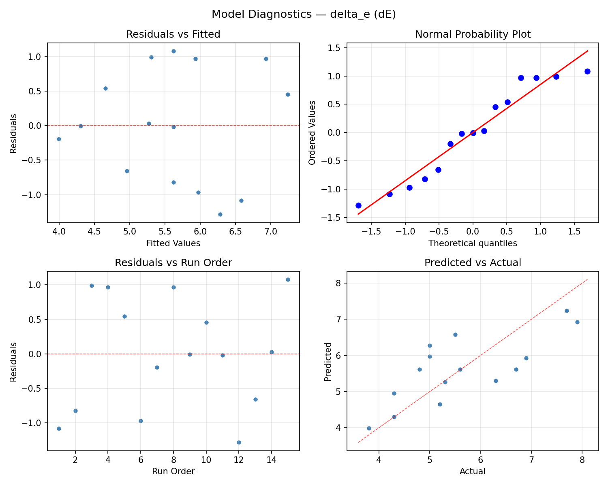
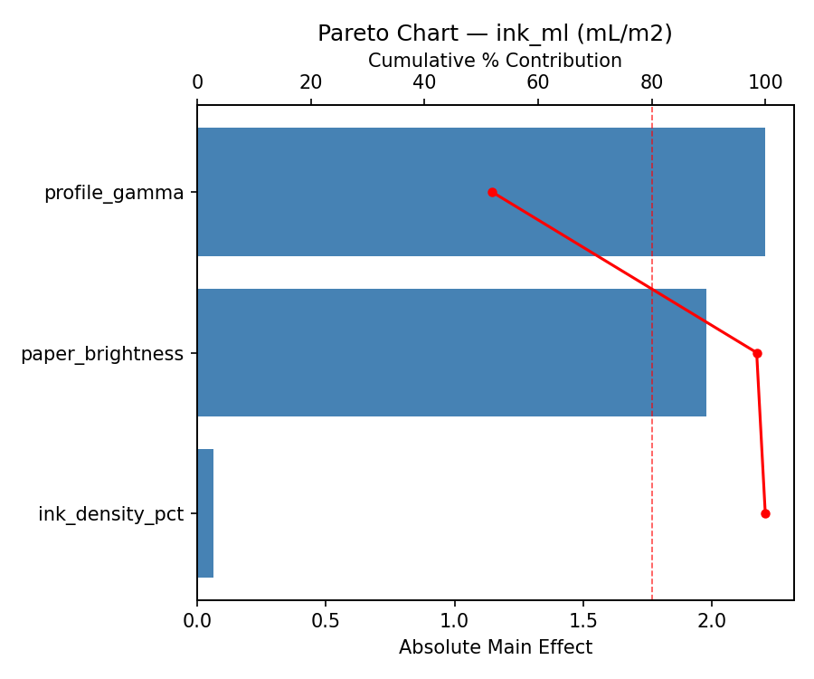
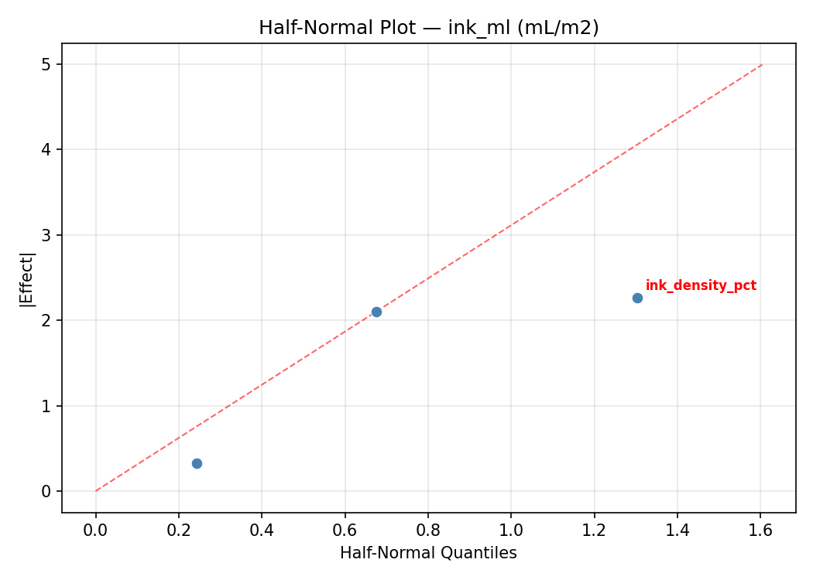
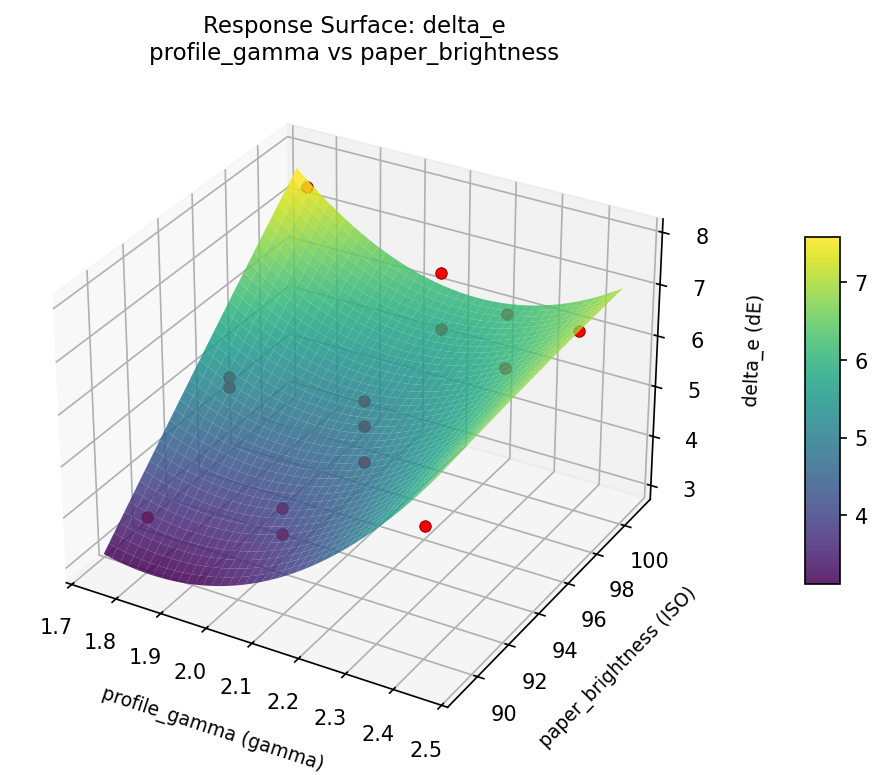
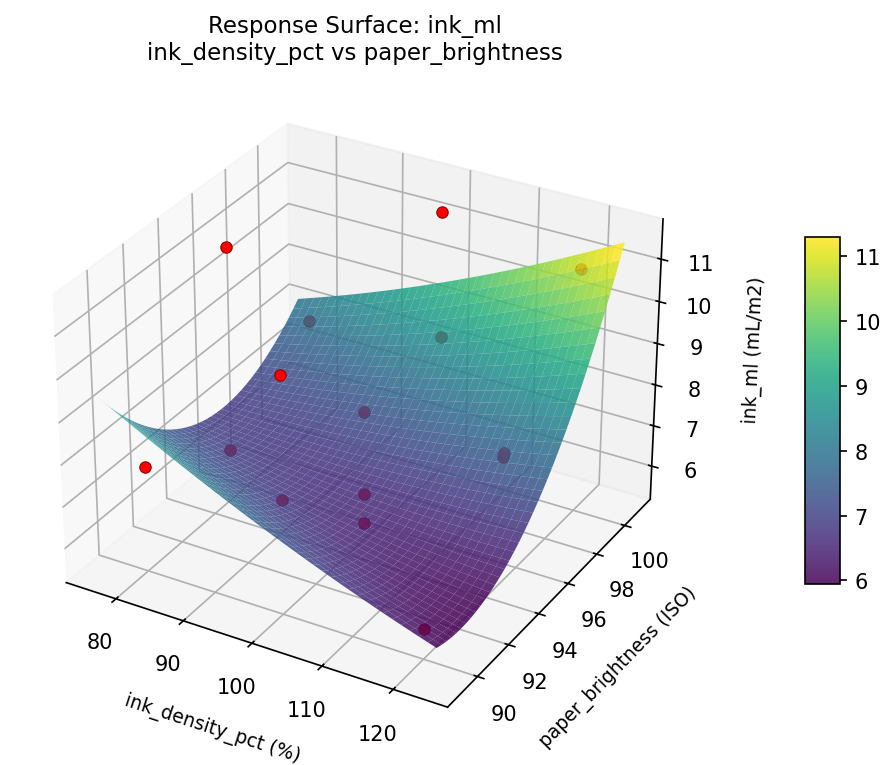
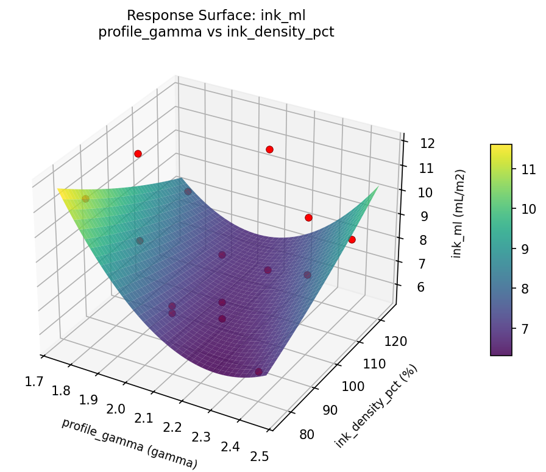
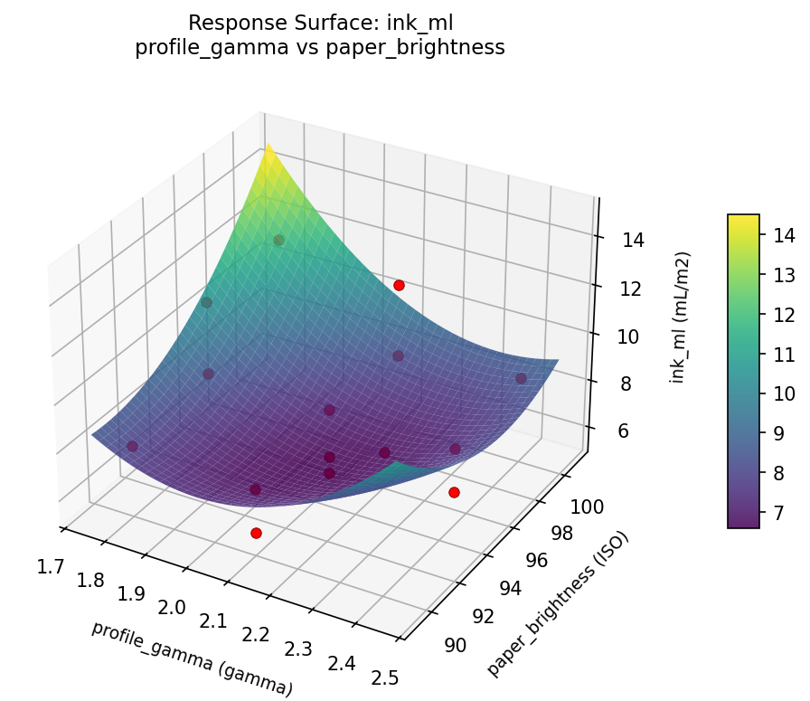

Summary
This experiment investigates photo print color accuracy. Box-Behnken design to maximize color accuracy and minimize ink cost by tuning color profile, ink density, and paper type brightness.
The design varies 3 factors: profile gamma (gamma), ranging from 1.8 to 2.4, ink density pct (%), ranging from 80 to 120, and paper brightness (ISO), ranging from 90 to 100. The goal is to optimize 2 responses: delta e (dE) (minimize) and ink ml (mL/m2) (minimize). Fixed conditions held constant across all runs include printer = inkjet_8color, resolution dpi = 1440.
A Box-Behnken design was chosen because it efficiently fits quadratic models with 3 continuous factors while avoiding extreme corner combinations — requiring only 15 runs instead of the 8 needed for a full factorial at two levels.
Quadratic response surface models were fitted to capture potential curvature and factor interactions. The RSM contour plots below visualize how pairs of factors jointly affect each response.
Key Findings
For delta e, the most influential factors were paper brightness (43.2%), profile gamma (35.5%), ink density pct (21.3%). The best observed value was 3.8 (at profile gamma = 2.1, ink density pct = 100, paper brightness = 95).
For ink ml, the most influential factors were profile gamma (45.9%), paper brightness (38.3%), ink density pct (15.8%). The best observed value was 5.6 (at profile gamma = 2.1, ink density pct = 100, paper brightness = 95).
Recommended Next Steps
- Run confirmation experiments at the predicted optimal settings to validate the model.
- Consider whether any fixed factors should be varied in a future study.
Experimental Setup
Factors
| Factor | Low | High | Unit |
|---|
profile_gamma | 1.8 | 2.4 | gamma |
ink_density_pct | 80 | 120 | % |
paper_brightness | 90 | 100 | ISO |
Fixed: printer = inkjet_8color, resolution_dpi = 1440
Responses
| Response | Direction | Unit |
|---|
delta_e | ↓ minimize | dE |
ink_ml | ↓ minimize | mL/m2 |
Configuration
{
"metadata": {
"name": "Photo Print Color Accuracy",
"description": "Box-Behnken design to maximize color accuracy and minimize ink cost by tuning color profile, ink density, and paper type brightness"
},
"factors": [
{
"name": "profile_gamma",
"levels": [
"1.8",
"2.4"
],
"type": "continuous",
"unit": "gamma"
},
{
"name": "ink_density_pct",
"levels": [
"80",
"120"
],
"type": "continuous",
"unit": "%"
},
{
"name": "paper_brightness",
"levels": [
"90",
"100"
],
"type": "continuous",
"unit": "ISO"
}
],
"fixed_factors": {
"printer": "inkjet_8color",
"resolution_dpi": "1440"
},
"responses": [
{
"name": "delta_e",
"optimize": "minimize",
"unit": "dE"
},
{
"name": "ink_ml",
"optimize": "minimize",
"unit": "mL/m2"
}
],
"settings": {
"operation": "box_behnken",
"test_script": "use_cases/155_photo_print_color/sim.sh"
}
}
Experimental Matrix
The Box-Behnken Design produces 15 runs. Each row is one experiment with specific factor settings.
| Run | profile_gamma | ink_density_pct | paper_brightness |
|---|
| 1 | 2.1 | 80 | 90 |
| 2 | 2.1 | 100 | 95 |
| 3 | 2.4 | 100 | 100 |
| 4 | 2.4 | 100 | 90 |
| 5 | 2.1 | 100 | 95 |
| 6 | 2.1 | 100 | 95 |
| 7 | 1.8 | 100 | 100 |
| 8 | 2.4 | 80 | 95 |
| 9 | 2.1 | 80 | 100 |
| 10 | 2.4 | 120 | 95 |
| 11 | 1.8 | 100 | 90 |
| 12 | 2.1 | 120 | 100 |
| 13 | 1.8 | 80 | 95 |
| 14 | 1.8 | 120 | 95 |
| 15 | 2.1 | 120 | 90 |
Step-by-Step Workflow
1
Preview the design
$ doe info --config use_cases/155_photo_print_color/config.json
2
Generate the runner script
$ doe generate --config use_cases/155_photo_print_color/config.json \
--output use_cases/155_photo_print_color/results/run.sh --seed 42
3
Execute the experiments
$ bash use_cases/155_photo_print_color/results/run.sh
4
Analyze results
$ doe analyze --config use_cases/155_photo_print_color/config.json
5
Get optimization recommendations
$ doe optimize --config use_cases/155_photo_print_color/config.json
6
Multi-objective optimization
With 2 competing responses, use --multi to find the best compromise via Derringer–Suich desirability.
$ doe optimize --config use_cases/155_photo_print_color/config.json --multi
7
Generate the HTML report
$ doe report --config use_cases/155_photo_print_color/config.json \
--output use_cases/155_photo_print_color/results/report.html
Features Exercised
| Feature | Value |
|---|
| Design type | box_behnken |
| Factor types | continuous (all 3) |
| Arg style | double-dash |
| Responses | 2 (delta_e ↓, ink_ml ↓) |
| Total runs | 15 |
Analysis Results
Generated from actual experiment runs using the DOE Helper Tool.
Response: delta_e
Top factors: paper_brightness (43.2%), profile_gamma (35.5%), ink_density_pct (21.3%).
ANOVA
| Source | DF | SS | MS | F | p-value |
|---|
| Source | DF | SS | MS | F | p-value |
| profile_gamma | 2 | 5.7869 | 2.8934 | 3.791 | 0.0695 |
| ink_density_pct | 2 | 1.4379 | 0.7190 | 0.942 | 0.4292 |
| paper_brightness | 2 | 5.1979 | 2.5990 | 3.405 | 0.0852 |
| Lack | of | Fit | 6 | 7.3746 | 1.2291 |
| Pure | Error | 2 | 1.5267 | | |
| Error | 8 | 8.9013 | 0.7633 | | |
| Total | 14 | 21.3240 | 1.5231 | | |
Pareto Chart

Main Effects Plot

Normal Probability Plot of Effects

Half-Normal Plot of Effects

Model Diagnostics

Response: ink_ml
Top factors: profile_gamma (45.9%), paper_brightness (38.3%), ink_density_pct (15.8%).
ANOVA
| Source | DF | SS | MS | F | p-value |
|---|
| Source | DF | SS | MS | F | p-value |
| profile_gamma | 2 | 11.4079 | 5.7040 | 3.649 | 0.0748 |
| ink_density_pct | 2 | 1.2347 | 0.6174 | 0.395 | 0.6862 |
| paper_brightness | 2 | 10.4979 | 5.2490 | 3.358 | 0.0874 |
| Lack | of | Fit | 6 | 27.7368 | 4.6228 |
| Pure | Error | 2 | 3.1267 | | |
| Error | 8 | 30.8634 | 1.5633 | | |
| Total | 14 | 54.0040 | 3.8574 | | |
Pareto Chart

Main Effects Plot

Normal Probability Plot of Effects

Half-Normal Plot of Effects

Model Diagnostics

Response Surface Plots
3D surfaces fitted with quadratic RSM. Red dots are observed data points.
delta e ink density pct vs paper brightness

delta e profile gamma vs ink density pct

delta e profile gamma vs paper brightness

ink ml ink density pct vs paper brightness

ink ml profile gamma vs ink density pct

ink ml profile gamma vs paper brightness

Multi-Objective Optimization
When responses compete, Derringer–Suich desirability finds the best compromise.
Each response is scaled to a 0–1 desirability, then combined via a weighted geometric mean.
Overall Desirability
D = 0.8690
Per-Response Desirability
| Response | Weight | Desirability | Predicted | Dir |
|---|
delta_e |
1.5 |
|
4.30 0.8437 4.30 dE |
↓ |
ink_ml |
1.0 |
|
5.90 0.9083 5.90 mL/m2 |
↓ |
Recommended Settings
| Factor | Value |
|---|
profile_gamma | 2.1 gamma |
ink_density_pct | 80 % |
paper_brightness | 90 ISO |
Source: from observed run #13
Trade-off Summary
Sacrifice = how much worse than single-objective best.
| Response | Predicted | Best Observed | Sacrifice |
|---|
ink_ml | 5.90 | 5.60 | +0.30 |
Top 3 Runs by Desirability
| Run | D | Factor Settings |
|---|
| #9 | 0.8449 | profile_gamma=2.1, ink_density_pct=120, paper_brightness=90 |
| #7 | 0.7928 | profile_gamma=2.4, ink_density_pct=80, paper_brightness=95 |
Model Quality
| Response | R² | Type |
|---|
ink_ml | 0.6998 | quadratic |
Full Multi-Objective Output
============================================================
MULTI-OBJECTIVE OPTIMIZATION
Method: Derringer-Suich Desirability Function
============================================================
Overall desirability: D = 0.8690
Response Weight Desirability Predicted Direction
---------------------------------------------------------------------
delta_e 1.5 0.8437 4.30 dE ↓
ink_ml 1.0 0.9083 5.90 mL/m2 ↓
Recommended settings:
profile_gamma = 2.1 gamma
ink_density_pct = 80 %
paper_brightness = 90 ISO
(from observed run #13)
Trade-off summary:
delta_e: 4.30 (best observed: 3.80, sacrifice: +0.50)
ink_ml: 5.90 (best observed: 5.60, sacrifice: +0.30)
Model quality:
delta_e: R² = 0.0763 (linear)
ink_ml: R² = 0.6998 (quadratic)
Top 3 observed runs by overall desirability:
1. Run #13 (D=0.8690): profile_gamma=2.1, ink_density_pct=80, paper_brightness=90
2. Run #9 (D=0.8449): profile_gamma=2.1, ink_density_pct=120, paper_brightness=90
3. Run #7 (D=0.7928): profile_gamma=2.4, ink_density_pct=80, paper_brightness=95
Full Analysis Output
=== Main Effects: delta_e ===
Factor Effect Std Error % Contribution
--------------------------------------------------------------
paper_brightness 1.5750 0.3187 43.2%
profile_gamma 1.2929 0.3187 35.5%
ink_density_pct 0.7750 0.3187 21.3%
=== ANOVA Table: delta_e ===
Source DF SS MS F p-value
-----------------------------------------------------------------------------
profile_gamma 2 5.7869 2.8934 3.791 0.0695
ink_density_pct 2 1.4379 0.7190 0.942 0.4292
paper_brightness 2 5.1979 2.5990 3.405 0.0852
Lack of Fit 6 7.3746 1.2291 1.610 0.4313
Pure Error 2 1.5267 0.7633
Error 8 8.9013 0.7633
Total 14 21.3240 1.5231
=== Summary Statistics: delta_e ===
profile_gamma:
Level N Mean Std Min Max
------------------------------------------------------------
1.8 4 6.1500 1.1619 5.0000 7.7000
2.1 7 4.9571 0.9727 3.8000 6.7000
2.4 4 6.2500 1.3916 5.0000 7.9000
ink_density_pct:
Level N Mean Std Min Max
------------------------------------------------------------
100 7 5.4857 1.3825 3.8000 7.7000
120 4 6.1250 1.5370 4.3000 7.9000
80 4 5.3500 0.6658 4.8000 6.3000
paper_brightness:
Level N Mean Std Min Max
------------------------------------------------------------
100 4 4.9500 0.4509 4.3000 5.3000
90 4 6.5250 1.2285 4.8000 7.7000
95 7 5.4857 1.3533 3.8000 7.9000
=== Main Effects: ink_ml ===
Factor Effect Std Error % Contribution
--------------------------------------------------------------
profile_gamma 2.0250 0.5071 45.9%
paper_brightness 1.6893 0.5071 38.3%
ink_density_pct 0.6964 0.5071 15.8%
=== ANOVA Table: ink_ml ===
Source DF SS MS F p-value
-----------------------------------------------------------------------------
profile_gamma 2 11.4079 5.7040 3.649 0.0748
ink_density_pct 2 1.2347 0.6174 0.395 0.6862
paper_brightness 2 10.4979 5.2490 3.358 0.0874
Lack of Fit 6 27.7368 4.6228 2.957 0.2742
Pure Error 2 3.1267 1.5633
Error 8 30.8634 1.5633
Total 14 54.0040 3.8574
=== Summary Statistics: ink_ml ===
profile_gamma:
Level N Mean Std Min Max
------------------------------------------------------------
1.8 4 9.8250 1.8319 8.0000 11.5000
2.1 7 7.8857 2.2327 5.6000 11.0000
2.4 4 7.8000 0.9345 6.4000 8.3000
ink_density_pct:
Level N Mean Std Min Max
------------------------------------------------------------
100 7 8.1286 2.4445 5.6000 11.5000
120 4 8.3750 1.9466 6.3000 11.0000
80 4 8.8250 1.3598 7.7000 10.8000
paper_brightness:
Level N Mean Std Min Max
------------------------------------------------------------
100 4 9.1750 2.3229 6.3000 11.3000
90 4 9.1500 2.4906 6.4000 11.5000
95 7 7.4857 1.2048 5.6000 8.5000
Optimization Recommendations
=== Optimization: delta_e ===
Direction: minimize
Best observed run: #7
profile_gamma = 2.1
ink_density_pct = 100
paper_brightness = 95
Value: 3.8
RSM Model (linear, R² = 0.3965, Adj R² = 0.2319):
Coefficients:
intercept +5.6200
profile_gamma +0.6250
ink_density_pct -0.3750
paper_brightness +0.7250
RSM Model (quadratic, R² = 0.7608, Adj R² = 0.3303):
Coefficients:
intercept +5.4000
profile_gamma +0.6250
ink_density_pct -0.3750
paper_brightness +0.7250
profile_gamma*ink_density_pct -0.7250
profile_gamma*paper_brightness +0.6750
ink_density_pct*paper_brightness -0.4250
profile_gamma^2 -0.4125
ink_density_pct^2 +0.0375
paper_brightness^2 +0.7875
Curvature analysis:
paper_brightness coef=+0.7875 convex (has a minimum)
profile_gamma coef=-0.4125 concave (has a maximum)
ink_density_pct coef=+0.0375 negligible curvature
Notable interactions:
profile_gamma*ink_density_pct coef=-0.7250 (antagonistic)
profile_gamma*paper_brightness coef=+0.6750 (synergistic)
ink_density_pct*paper_brightness coef=-0.4250 (antagonistic)
Predicted optimum (from quadratic model, at observed points):
profile_gamma = 2.4
ink_density_pct = 100
paper_brightness = 100
Predicted value: 7.8000
Surface optimum (via L-BFGS-B, quadratic model):
profile_gamma = 1.8
ink_density_pct = 80
paper_brightness = 93.4921
Predicted value: 3.9784
Model quality: Good fit — general trends are captured, some noise remains.
Factor importance:
1. paper_brightness (effect: 1.5, contribution: 43.5%)
2. profile_gamma (effect: 1.2, contribution: 35.3%)
3. ink_density_pct (effect: 0.8, contribution: 21.2%)
=== Optimization: ink_ml ===
Direction: minimize
Best observed run: #1
profile_gamma = 2.1
ink_density_pct = 100
paper_brightness = 95
Value: 5.6
RSM Model (linear, R² = 0.2173, Adj R² = 0.0039):
Coefficients:
intercept +8.3800
profile_gamma -0.0250
ink_density_pct -1.1875
paper_brightness -0.2375
RSM Model (quadratic, R² = 0.8132, Adj R² = 0.4769):
Coefficients:
intercept +6.6333
profile_gamma -0.0250
ink_density_pct -1.1875
paper_brightness -0.2375
profile_gamma*ink_density_pct -1.6250
profile_gamma*paper_brightness +0.7250
ink_density_pct*paper_brightness -0.0500
profile_gamma^2 +0.2083
ink_density_pct^2 +0.8833
paper_brightness^2 +2.1833
Curvature analysis:
paper_brightness coef=+2.1833 convex (has a minimum)
ink_density_pct coef=+0.8833 convex (has a minimum)
profile_gamma coef=+0.2083 convex (has a minimum)
Notable interactions:
profile_gamma*ink_density_pct coef=-1.6250 (antagonistic)
profile_gamma*paper_brightness coef=+0.7250 (synergistic)
Predicted optimum (from quadratic model, at observed points):
profile_gamma = 2.1
ink_density_pct = 80
paper_brightness = 90
Predicted value: 11.0750
Surface optimum (via L-BFGS-B, quadratic model):
profile_gamma = 2.4
ink_density_pct = 120
paper_brightness = 94.499
Predicted value: 4.8656
Model quality: Good fit — general trends are captured, some noise remains.
Factor importance:
1. ink_density_pct (effect: 2.4, contribution: 49.8%)
2. paper_brightness (effect: 2.3, contribution: 49.1%)
3. profile_gamma (effect: 0.1, contribution: 1.0%)